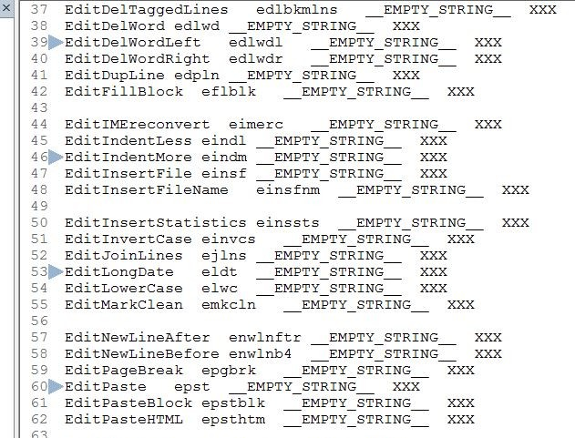

[top] TPKC-build: Before everything else: Manually creating the raw-global-configurationzzXPSUB_DIR_tpkcRawCfgGlobal\[cat-abrv].txtBefore the TPKC project can be built, its "Raw Global Command Configuration" (or "raw-global-config") must be created. This is a largely manual process--very little of it is automated. However, it is only necessary to do this entire process once. When a new version of TextPad is released, if it eliminates, adds, renames, or fundamentally changes any built-in command, these output files must be updated to reflect it--and then the TPKC project must be re-built.
The raw-global-config is stored in zzXPSUB_DIR_tpkcRawCfgGlobal
This section documents the creation of the raw-global-config from nothing--as if it never existed.
Steps, in order:
[go] Update the all-category-qbl[go] Update category configuration[go] Create the raw-global-configThe TPKC-build-process will fail if there are any empty-lines anywhere in the raw-global-config files.
Update the all-category-qbl
zTpkcAllCategoryAbrvLCsQbl
to reflect the new category-list.
Update the category configuration, to reflect the values in the all-category-qbl (zTpkcAllCategoryAbrvLCsQbl). The command-list for each category can be retrieved via
TextPad > Preferences > Keyboard > [one-category] > [List-button]
and using only the values in the first column. Get the first column values by turning word-wrap off, checking
TextPad > Configure > Block Select Mode
and then selecting the column with the mouse. Alternatively, use this regex replacement:
^([^ ]+) .+$$1To prepare for the next step (creating the raw-global-config), save this command-name column into
zzXPSUB_DIR_tpkcRawCfgGlobal\[cat-abrv].px.txt
where [cat-abrv] is as defined in the all-category-qbl (zTpkcAllCategoryAbrvLCsQbl),
Now close the document and continue with that same text remaining in the clipboard.
zTpkc[cat-abrv]AllCmdsQblIn the category-confg file
-zzXPSUB_DIR_tpkcConfigCategory\[cat-abrv].px.txt
replace the value of
zTpkc[cat-abrv]AllCmdsQbl
with the list currently in the clipboard. To transform this column of command names in to a Square-Bracketed List (qb-list) as expected, select the column and then use these two regex replacements:
^(.+)$[$1]\nThe command names for the Characters category, as assigned by TextPad
TextPad > Preferences > Keyboard > Categories > "Characters" > Commands
Are not appropriate for the TPKC project. This is the only category in which this is an issue. Instead, as of version 7.0.9, use these alternatives.
Note each name starts with "Char##" (zero-padded for numbers less than ten), to ensure the ordering is exactly the same as the original list.
In the previous step, you duplicated the command-name column to
zzXPSUB_DIR_tpkcRawCfgGlobal\[cat-abrv].px.txt
After this final step, these files become the raw-global-config.
For example (assuming TextPad version 7.0.9), here are the first five lines from
{#insert zzXPSUB_DIR_tpkcRawCfgGlobal}file.txt
FileClose FileCloseAll FileExit FileGoTo FileManage
This needs to be transformed to the following:
FileClose zTPFileClose Fcls yes 50 (*NOTHING! No steps! This command is the top-most command in the list.*)
FileCloseAll zTPFileCloseAll Fclsa {#insert zzEmptyStringMarker} 50 \\\{#DOWN\\\}\\\{#insert z5ThnTSlp\\\}
FileExit zTPFileExit Fxit {#insert zzEmptyStringMarker} {#insert zzEmptyStringMarker} \\\{#DOWN -count 2\\\}\\\{#insert z5ThnTSlp\\\}
FileGoTo zTPFileOpenSelPath Fgoto {#insert zzEmptyStringMarker} 100 \\\{#DOWN -count 3\\\}\\\{#insert z5ThnTSlp\\\}
FileManage zTPFileManager Fmngr {#insert zzEmptyStringMarker} 50 \\\{#PGDN\\\}\\\{#insert z5ThnTSlp\\\}\\\{#UP -count 2\\\}\\\{#insert z5ThnTSlp\\\}
Columns:
zTpkc[abrv]DfltPhrsNmzTpkc[abrv]Abrv1C"yes", otherwise ''.
zTpkc[abrv]IsBtstrp_yesTextPad > Preferences > Keyboard > [Category name] > Commands
{#insert zDOWN}
z5ThnTSlp.
zTpkc[abrv]StpsFrmCmdListTopzTP[command-name]
Determining the go-to-command-from-list-top steps.
Textpad > Configure > Block select mode
TextPad > Configure > Block Select Mode
[zTpkc*AllCmdsQbl] (and its corresponding [zTpkc*CmdCount]) variables in [zzXPSUB_DIR_tpkcConfigCategory]all_cmd_nms_2_cols.pdf
HOME, END, PGUP#, and PGDN#-s are determined, the rest are simply an UP#-or-DOWN# away from that original HOME (or END, or PGUP#, or PGDN#). Use empty-lines and bookmarks to make this easier, as demonstrated here:

[zXPROOT_DIR_tpkcRawCfgGlobal][category-abrv].px.txt
XXX"-s). Use raw PhraseExpress function calls and follow each with [z5ThnSlp]. For example:
\\\{#PGDN -count 3\\\}\\\{#insert z5ThnSlp\\\}\\\{#UP\\\}\\\{#insert z5ThnSlp\\\}zTpkcCreateAllGlblCmdCfgFilesForAllCatsFor categories where every command name starts with the same letter (such as Edit and Window), the commands END, PGDN, and PGUP will be the basis. For example, to get to EditCutLine, use these steps:
\\\{#PGDN -count 3\\\}\\\{#insert z5ThnSlp\\\}\\\{#DOWN\\\}\\\{#insert z5ThnSlp\\\}
For categories with commands having multiple starting characters (such as Search, Configure, and Cursor), the first character can be used in its place. For example, to get to MatchBracketExtend, use these steps:
m\\\{#insert z5ThnSlp\\\}\\\{#DOWN\\\}\\\{#insert z5ThnSlp\\\}